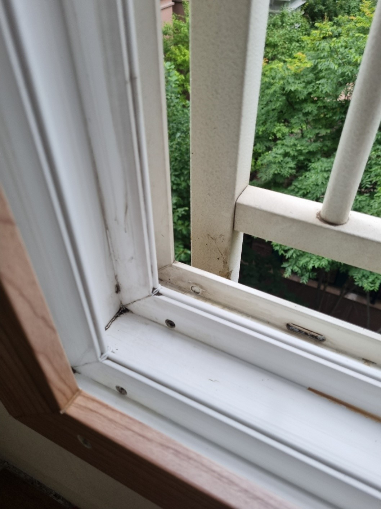
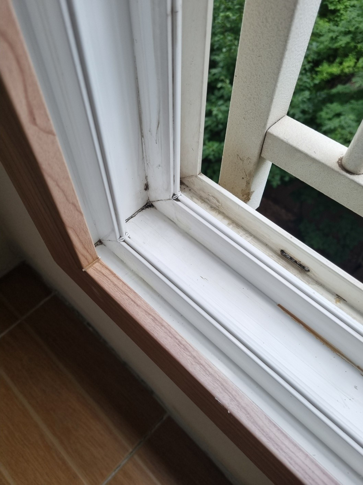

기존 샤시 유지
정상적인 창호는 그대로 두고 타공된 구멍 부위만 수리합니다.
랜선을 철거한 뒤 샤시 프레임에 구멍이 남아 있어 이사 전에 원상복구를 의뢰하신 현장입니다. 고객님께서 부동산에 문의하던 중 샤시 복원을 잘하는 업체로 추천받아 연락을 주셨고, 프레임 전체를 교체하지 않고 구멍 부위만 복원했습니다.

샤시 구멍은 겉면만 메우면 충격이나 온도 변화로 갈라지거나 단차가 보일 수 있습니다. 구멍 내부를 안정적으로 보강하고 프레임과 같은 높이로 평탄화한 뒤, 주변 샤시 색상과 광도에 맞춰 마감해야 자연스럽습니다.
랜선이나 배관 철거 후 생긴 국소 구멍이라면 멀쩡한 창호 전체를 바꾸지 않고 필요한 부분만 복원할 수 있습니다.
정상적인 창호는 그대로 두고 타공된 구멍 부위만 수리합니다.
퇴거 전에 남은 랜선 구멍을 정리해 깔끔한 상태로 돌려놓습니다.
창호 전체 철거와 교체 없이 비교적 빠르게 마무리합니다.
작은 구멍 때문에 샤시 전체를 교체하는 부담을 줄일 수 있습니다.
구멍의 크기와 프레임 상태를 확인한 뒤 내부 보강부터 색상·광도 마감까지 순서대로 진행합니다.
창과 주변 바닥을 보호하고 구멍의 크기와 깊이를 확인합니다.
타공 주변의 약해진 부분과 이물질을 정리해 안정적인 바탕을 만듭니다.
구멍 안쪽을 단단하게 보강해 메움재가 안정적으로 유지되게 합니다.
샤시 면과 높이를 맞추고 주변 프레임 색상에 맞춰 현장 조색합니다.
표면의 질감과 빛 반사를 정리하고 여러 각도에서 확인합니다.
랜선 구멍의 내부를 보강하고 샤시 프레임과 같은 높이로 면을 잡은 뒤 주변 색상과 표면 질감을 맞춰 약 2시간 만에 마무리했습니다.

“샤시 구멍이 없었던 것처럼 완전 깔끔하네요^^ 이사 문제없이 완료했어요~ 감사합니다!”
| 비교 항목 | 구멍 부분복원 | 샤시 교체 |
|---|---|---|
| 비용 | 손상 부위 중심으로 비교적 부담이 적음 | 창호 자재와 철거·설치 비용이 발생 |
| 작업시간 | 현장 상태에 따라 비교적 짧음 | 제작과 철거, 설치 일정이 필요 |
| 생활 불편 | 작업 범위가 작아 불편을 줄일 수 있음 | 창 주변 공사 범위와 소음이 커질 수 있음 |
| 완성도 | 기존 프레임 색상과 표면에 맞춰 구멍을 연결 | 창호 전체를 새 제품으로 교체 |
| 효과 | 국소 타공 구멍을 복원하고 기존 샤시 유지 | 노후·변형이 넓은 창호를 전체 개선 |
창호 전체와 구멍 부위를 함께 보내주시면 샤시 재질과 손상 상태를 확인해 상담합니다.